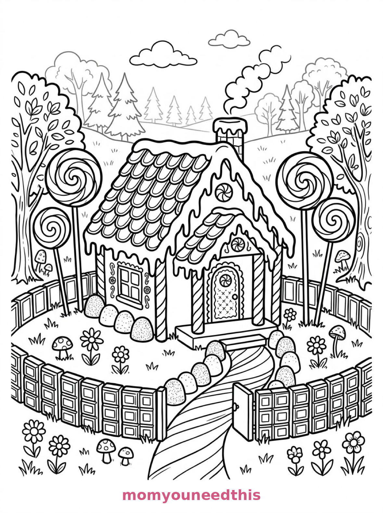
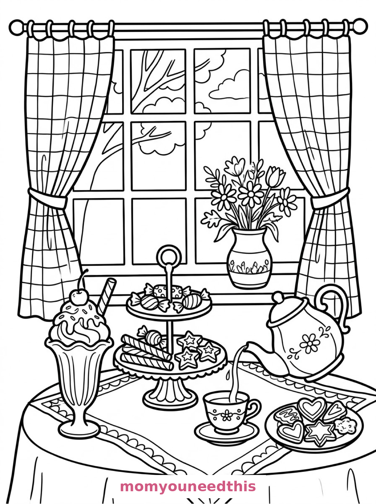

Free Candy Coloring Pages Candy Shop, Gingerbread House & Sweet Still Life Printables
These free candy coloring pages open the sweet shop — jars of lollipops on wooden shelves, a gingerbread house in a forest clearing, and a patisserie table with a swirled sundae. Download the set below, print at home on letter-size paper, and let the coloring fun begin. No signup needed.
Last updated: October 23, 2026
Quick Answer
Yes — this page has three free printable candy coloring pages: the inside of a storybook candy shop with tall jars of lollipops and candy canes, a gingerbread house in a forest clearing with lollipop trees, and a still life of sweets with a tall ice cream sundae. Bold outlines and big spaces, made for little hands. Download, print on letter-size paper, and hand over the crayons — no signup, no cost.
At a Glance
- Ages: 3–8
- Pages: 3 free printables
- Format: Print at home, letter size
- Cost: Free, no signup
- Supplies: Crayons or markers
- Time: 10–20 minutes
🍬 Inside the Candy Shop Coloring Page

🎨 Download Your Free Candy Shop Coloring Page
Inside a storybook candy shop, tall glass jars filled with swirled lollipops, wrapped sweets and candy canes line wooden shelves, a cake stand piled with bonbons sits on a round table, and a staircase of gumdrops leads up to a counter with an old-fashioned till — bold outlines, big spaces, zero signup.
⬇️ Download Free Candy Shop Page 🖨️ Print Candy Shop Page🎁 Free printable for preschoolers & kids
🏠 Gingerbread House in the Clearing Coloring Page

🎨 Download Your Free Candy Gingerbread Coloring Page
A gingerbread house stands in a forest clearing with candy cane pillars, a roof tiled with wafer shingles and icing trim, gumdrop bushes lining a peppermint path to the door, lollipop trees with spiral tops and a chocolate-bar fence around the garden — bold outlines, big spaces, zero signup.
⬇️ Download Free Candy House Page 🖨️ Print Candy House Page🎁 Free printable for preschoolers & kids
🍨 Sweet Still Life with a Sundae Coloring Page

🎨 Download Your Free Sweet Still Life Coloring Page
A still life of storybook sweets on a patisserie table: a tall swirled ice cream sundae in a fluted glass, a tiered tray of wrapped candies and striped candy sticks, a teapot pouring into a cup beside a plate of iced biscuits, framed by a window with checked curtains — bold outlines, big spaces, zero signup.
⬇️ Download Free Still Life Page 🖨️ Print Still Life Page🎁 Free printable for preschoolers & kids
More Coloring Pages
Tap any picture to open its theme page and download the free printable.


🍬 How To Use This Page
- Browse the three designs and pick the sweet scene your child will love most.
- Tap download or print under that design — the file opens full-size, ready for letter-size paper.
- Print a couple of copies of the candy shop — every jar can hold a different flavor.
- Color together with crayons or markers and name the flavors.
🍭 Why Kids Love Candy Coloring Pages
Candy is color. Lollipops swirl, candy canes stripe, gumdrops come in every shade in the box — a candy page is practically a color chart disguised as a treat. These three designs give kids a whole shop to stock, a house to decorate, and a dessert table to set.
They are also pattern candy: swirls, stripes, checks and tiers repeat everywhere, so kids practice patterns while they think they're just coloring sweets. The checked curtains and the candy sticks are miniature pattern lessons that nobody notices as lessons.
🍬 Meet the Three Candy Scenes on This Page
Inside the candy shop. The inside of a storybook candy shop with tall glass jars filled with swirled lollipops, wrapped sweets and candy canes arranged on wooden shelves, a striped awning over the shop window, a round table holding a cake stand piled with bonbons, and a staircase of gumdrops leading up to a counter with an old-fashioned till. It is the fullest page in the set — a whole shop to stock, jar by jar.
The gingerbread house in the clearing. A gingerbread house in a forest clearing with candy cane pillars, a roof tiled with wafer shingles and icing trim, gumdrop bushes lining a peppermint path to the door, lollipop trees with spiral tops on either side, and a chocolate-bar fence running around the garden. It is the most storybook page in the set — note it is its own design, different from the three houses on the gingerbread house coloring pages.
The sweet still life. A still life of storybook sweets on a patisserie table: a tall swirled ice cream sundae in a fluted glass, a tiered tray of wrapped candies and striped candy sticks, a teapot pouring into a cup beside a plate of iced biscuits, all framed by a window with checked curtains and a vase of flowers on the sill. It is the prettiest page in the set — made for careful, delicious coloring.
✏️ Candy Coloring Tips
- One jar, one flavor. Strawberry reds in one jar, lemon yellows in the next, mint greens in a third — the candy shop organizes itself by color.
- Swirl the lollipops in two colors. Alternating wedges of two colors make the spiral tops on the lollipop trees and jars spin.
- Leave the icing white. On the gingerbread house, white icing between colored candies is what makes it look edible.
- Check the curtains. The still life's checked curtains are the perfect place to practice a two-color checkerboard — small squares, big satisfaction.
🍬 Coloring Pages for Different Ages
For ages 3 to 4, start with the gingerbread house. One big house, chunky candies and lollipop trees are all a little colorer needs.
For ages 5 to 6, the sweet still life is the sweet spot. The sundae and the tray are satisfying shapes, and the teapot and biscuits add a tabletop to build.
For ages 7 to 8, hand over the candy shop. Jar after jar of individual sweets, a gumdrop staircase and an old-fashioned till reward patience — the finished shop looks like a storybook illustration.
🍭 More Candy Fun After Coloring
Open your own shop: after coloring, let your child be the shopkeeper of the candy shop page — you point at a jar, they name the flavor and the price in pretend money. Coloring page, imagination game, zero actual sugar.
For more baked sweetness, the cake coloring pages serve a birthday cake, a tea party and a baker cat — and the full candy-house collection lives on the gingerbread house coloring pages.
🔗 More Free Printables You’ll Love
- Free Cake Coloring Pages A birthday cake, a tea-party slice and a baker cat to color.
- Free Gingerbread House Coloring Pages A candy house, a pretzel cottage and a village street.
- Free Cupcake Coloring Pages Cupcakes to print and color, with bold outlines and big spaces.
- All Free Coloring Pages Browse every free coloring page on the site, organized by theme.
❓ Candy Coloring Pages FAQ
Are these candy coloring pages really free?
Yes — all three designs on this page are free original printables from MomYouNeedThis. Download them, print them at home, and color — no signup and no cost.
What ages are these coloring pages best for?
Kids ages 3 to 8 get the most from this set. The gingerbread house is the gentlest start for younger children, while the candy shop and still life scenes have the detail older kids enjoy.
How do I print a coloring page?
Tap the download button under the design you want, then print the file on regular letter-size paper. The print button opens the full-size page in a new tab if you prefer to print from there.
Is the gingerbread house here the same as the gingerbread house coloring pages?
No — the house on this page stands in a forest clearing with a peppermint path, lollipop trees and a chocolate-bar fence. The gingerbread house coloring pages have three different houses: a candy house, a pretzel cottage and a whole village street.
Can I make a candy coloring book from these pages?
Yes — print all three designs, stack them in order, and staple along the left edge. Add a cover sheet with your child's name for a finished homemade candy coloring book.